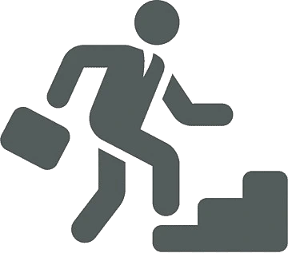

Stand:14.01.2025!
Das Federal Investigation Bureau sucht aktuell 10 neue Agenten.
Karriere
Einstiegsmöglichkeiten
Bist du auf der Suche nach einem Beruf, der dir ein gutes Gefühl gibt? Bist du an der Kriminalitätsbekämpfung interessiert und willst zur Sicherheit von San Andreas beitragen? Dann ist die Ausbildung zum Agent (w/m/d) genau das Richtige für dich.

Bei uns findest du ein angenehmes, spannendes und zugleich professionelles Arbeitsklima mit freundlichen und erfahrenen Kollegen. Wir bieten dir ein Arbeitsfeld wie kein anderer. Führe mitunter Ermittlungen, wirke bei Razzien mit, überwache illegale Aktivitäten und arbeite so mit uns gegen die Verbrechen von San Andreas.
Häufig gestellte Fragen
Wann findet die nächste Bewerbungsphase statt?
Wann die nächste Bewerbungsphase stattfindet, lässt sich pauschal nicht sagen. Sollten wir über freie Kapazitäten verfügen und Nachwuchs benötigen, informieren wir rechtzeitig über unseren Discord unter Öffentlichkeit → Bewerbung. Halte dich dort also selbstständig auf dem aktuellen Stand.
Wie läuft das Auswahlverfahren ab?
Nachdem du deine schriftliche Bewerbung abgesendet hast, bestätigen wir den Eingang dieser, stimmen darüber demokratisch ab und beraten uns. Des Weiteren führen wir eine Leumundsprüfung durch. Sollte beides unseren Erwartungen entsprechen, laden wir dich zu einem Vorstellungsgespräch ein, welches im FIB-Hauptquartier durchgeführt wird. Andernfalls wird deine Bewerbung abgelehnt und du erhältst die Chance, dich in der nächsten Bewerbungsphase erneut zu bewerben.
Wie lange dauert es, bis ich eine Antwort erhalte?
Normalerweise dauert dies bis zu fünf Tage. Bei einem in der Regel hohen Bewerbungsaufkommen kann es gegebenenfalls länger dauern, bis du eine Zusage/Absage erhältst. Daher sehen wir von Anfragen, wann wir die Bewerbung bearbeiten/beantworten, ab. Es werden alle Bewerbungen von uns nacheinander bearbeitet.
Was musst du alles in deine Bewerbung schreiben?
Zu allererst ist es wichtig, dass du deine Bewerbung als ein Dokument per Google Docs schreibst
Achtung Alle Angaben beziehen sich auf deinen Ingame Character (IC). Bitte gebe keine realen Daten an!
Folgende Punkte müssen mindestens enthalten sein:
- Vor- und Nachname
- Handynummer
- Alle Charaktere, die du spielst:
- welchen Fraktionen gehören diese an
- welchen Rang haben diese
- Über dich, Laufbahn und bereits im Staat gesammelte Erfahrungen
- Gründe, wieso du ins FIB möchtest
- Ziele und Wünsche im FIB
- Was genau für deine Annahme spricht
- Mögliche Dienstzeiten (ungefähr)
- Zusätzliches, was du ggf. nennen möchtest
Was erwarten wir von deiner Bewerbung?
- orthografische und grammatikalische Korrektheit
- Form
- steht dir frei, wie du deine Bewerbung gestaltest.
- Die meisten fertigen ein Anschreiben u. Lebenslauf an
- oder arbeiten alle o.g. Punkte ab.
- Annahme nur möglich wenn ihr kein Char in einer Badfrak habt
- Führerschein + Waffenschein, als Kopie/Bild
- möglichst viel Fließtext
Welche Voraussetzungen gibt es?
- Straffreiheit (außer Bußgelder)
- es können ggf. Ausnahmen gemacht werden
- Führerschein Klasse B
- Beherrschung der deutschen Sprache in Wort und Schrift
- Motivation
- Ausdauer
- ruhiges, reifes und professionelles Auftreten
Wie bereite ich mich auf ein mögliches Vorstellungsgespräch vor?
Mache dich mit unserer Webseite vertraut und überlege dir Antworten auf mögliche Fragen. Der erste Eindruck ist alles — kleide dich angemessen und erscheine pünktlich. Warte bitte solange auf dem Besucherparkplatz bis dich jemand abholt und betrete nicht eigenständig unbefugt das Sperrgebiet!
Wohin muss ich die Bewerbung senden?
Zuallererst musst du dem Discord des Federal Investigation Bureau beitreten. Anschließend klickst du auf Öffentlichkeit → Bewerbung und erstellst dort ein Ticket, in der du deine Bewerbung als Google Docs-Link verlinkst. Vergewissere dich, dass das Google Docs-Dokument an "Jeder, der über den Link verfügt" freigegeben ist. Über alles Weitere informieren wir dich in deinem Ticket.
Darf ich die Bewerbung mit Hilfe künstlicher Intelligenz oder anderer Personen schreiben?
Nein. Wir erwarten, dass die Bewerbung komplett eigenständig, ohne Hilfe künstlicher Intelligenz oder anderer Personen, verfasst wird. Solltest du etwas inhaltliches kopieren und in deiner Bewerbung nutzen, wirst du eine Bewerbungssperre erhalten.
Das Department of Recruitment and Training ist ein internes und direktionsübergreifendes Gremium des FIB. Mitglieder des Gremiums verfolgen die Aufgaben der Akquise von Interessenten, tiefgreifende Prüfung dieser und die letztendliche Einstellung. Sie sind also vollständig und alleinig für die Abhandlung des Bewerbungsprozesses zuständig. Außerdem kümmern sie sich um die Qualitätserhöhung der Kompetenzen der Agenten.